TERRE EN VUE aurait pu (ou dû) crier Clément pour nous réveiller. Après 14j et quelques heures de bleu infini, nous voyons apparaître à l’horizon des reliefs. Enfin ! Les derniers jours de navigation ont été éprouvants et nous avons, autant que le bateau, hâte d’arriver. Le fond est remonté et nous naviguons dans une trentaine de mètres alors que les premières îles sont encore à plusieurs kilomètres. Le soleil illumine les fonds sableux, l’air est doux et l’eau se pare d’un beau turquoise. Notre étrave est pointée vers Union Island, l’île la plus au sud de l'État de Saint Vincent et les Grenadines. Nous mouillons dans la baie de Clifton après avoir laissé passer un ultime grain venu nous rappeler qu’un abri est toujours relatif. Les épaves de bateau sur la plage et les ruines des bars sur le front de mer nous le confirment. Union a été la principale victime du passage de l’ouragan Béryl, survenu cet été. Les maisons, en tout cas celles qui sont encore debout, sont couvertes de bâches pour remplacer leur toit disparu. Nous sommes frappés par ce que nous voyons en descendant à terre. Les maisons colorées abandonnées, les bars éventrés et les bureaux fermés encadrent la rue principale. La banque n’a pas été plus épargnée et il nous est impossible de retirer des ECD (Eastern Caribbean Dollars), la monnaie commune aux états des Antilles. Le supermarché nous en vend avec 10% de frais. Mais que faire de ces deniers quand les pâtes se vendent à près de 9€ le kilo ? Nous rentrons au bateau les mains vides mais la tête remplie de questions.
Le tour de l’île nous laisse penser que les grandes bâtisses hébergent en temps normal des groupes de touristes fortunés venus profiter des eaux turquoises. Les habitants nous alpaguent aimablement et en traversant Ashton, nous découvrons à quoi doit ressembler la vie en temps normal. Les locaux sont à leur porte en cette fin de journée et nous profitons de la lumière du soir sur le quai qui avance vers la mangrove.
Deux semaines de mer ont épuisé nos réserves d’eau. Heureusement, un robinet est disponible à Clifton. L’eau qui en sort est désalinisée dans le local adjacent. Nous remplissons des bidons et éprouvons du remord à laver les quelques affaires qui nous seront nécessaires dans les prochaines semaines. Nous rentrons au bateau remplir les réservoirs. Comment allons nous pouvoir nous organiser pour profiter de cet archipel si nous ne pouvons ni trouver de la nourriture basique, ni faire de lessive ou trouver de l’argent ? La question nous inquiète alors nous nous tournons vers notre inventaire. En parcourant la liste des réserves qui nous restent, nous pensons pouvoir tenir quinze jours en quasi autonomie. Quinze jours de plus donc.
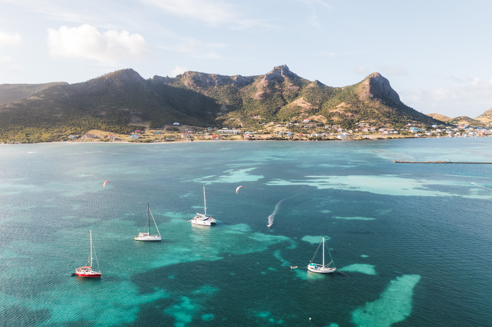
L’ancre tombe et nous levons les yeux vers Frigate Island qui nous surplombe. Au sud de Union, ce spot est reconnu pour ses conditions idéales à la pratique des sports nautiques. Nous y resterons cinq jours durant lesquels nous réveillerons nos muscles endormis par nos deux semaines de pseudo sédentarité. Nous y rencontrerons aussi des navigateurs venus de loin, exprès pour profiter de ce lieu. Loann commence à passer ses « jibe » (empannage) en wing, Clément réussit son premier virement et j’apprends à planer en planche à voile. Merci Frigate !
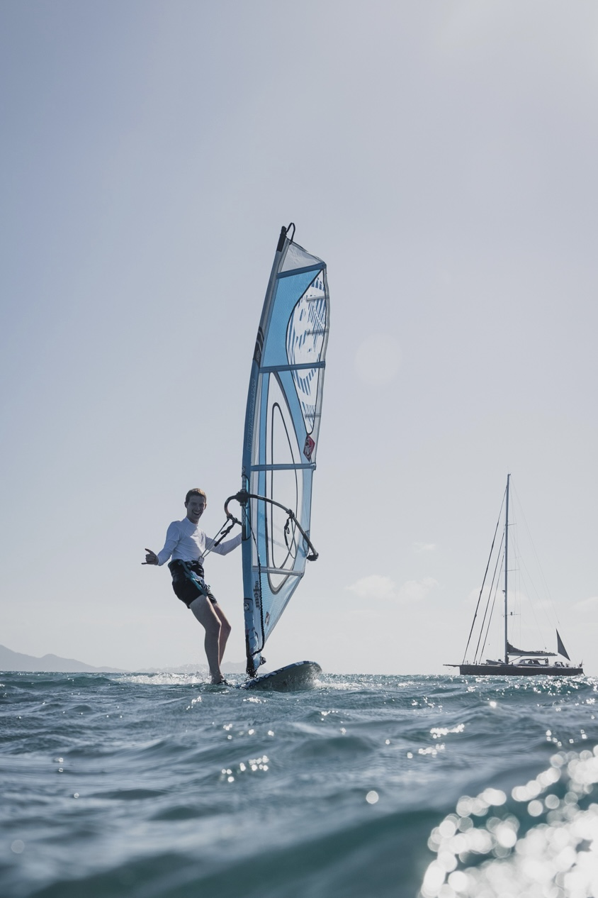
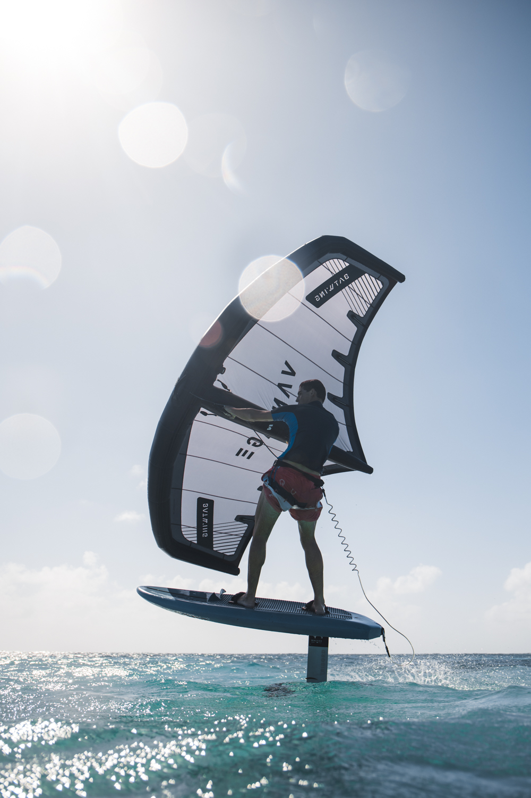
Next stop : Palm Island. Si nous avons rapidement pris conscience que les Grenadines ne se présentent pas à nous comme elles le feraient en temps normal, Palm Island nous le crie. Qu’est ce qu’une photo de carte postale antillaise vous évoque ? Des palmiers ? Il y en a. Des palmiers plantés sur une plage de sable blanc ? C’est bon. Des palmiers et une eau turquoise séparés par du sable blanc ? Évidemment. Une paillote posée sur du sable blanc qu’on rejoint en longeant des palmiers et une eau turquoise ? Dans le mille. Le tout, sans personne. Juste le bruit des palmes agitées par le vent et des vagues qui viennent lécher la plage. Pas de porte qui claque ou de bâche tendue, c’est un paradis figé. Nous remettons les voiles.
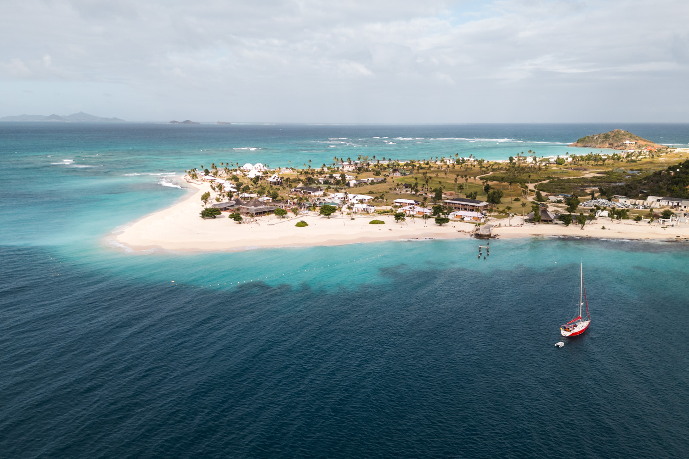
« Berlioz, berlioz, est ce que vous m’entendez ? ». La Saline bay semble plus habitée, nous… « Berlioz vous m’entendez ? C’est le catamaran à côté de vous ». Nous arrivons dans un mouillage sur la côte… « Berlioz, ne prenez pas la bouée, le type qui vous aide est incompétent et va vous faire payer une fortune. Mettez vous à l’ancre ». Allez, suffit la VHF, nous voulons profiter du coucher de soleil sur Union.
La vaste baie est couverte d’herbes à tortues desquelles émergent des lambies. De toutes tailles, ces gros coquillages en forme de trompe présentent un pavillon rose lorsqu’on les retourne. Nous en prenons deux et les préparons selon des méthodes trouvées sur internet. Elles peuvent se résumer ainsi :
- Poser le coquillage sur une surface bien plate, le pavillon vers le bas
- Frapper de toutes vos forces derrière la deuxième couronne pour perforer la coquille
- Décoller la ventouse du crustacé à l’aide d’une lame de couteau introduite dans l’orifice
- Sortez et épluchez le crustacé
- Frapper avec force avec un marteau sur ce qu’il vous reste pour détendre la chair
Cette méthode vous semble violente ? Imaginez nous en caleçons découvrant les subtilités des étapes deux et cinq à la frontale à l’arrière du bateau. L’étrangeté de la situation a aidé.
Désespérés de devoir manger des conserves, cette nourriture fraîche nous a fait le plus grand bien. Alors nous avons sillonné la baie jusqu’à trouver une jolie colonie de langoustes. Je laisse Loann expliquer comment les attraper dans leur trou : « C’est comme pour le homard sauf que ça n’a rien à voir ». Il faudra qu’il nous montre comment faire pour du homard. La sauce au beurre blanc qu’il cuisine avec de la margarine (autarcie : incapacité à se pourvoir d’articles essentiels tel que le beurre [NDLR]) ira à sier avec les trois langoustes que nous ramenons.
Vous entrez dans une réserve naturelle, la pêche y est formellement interdite. Très bien, nous rangeons les papilles et allons en profiter avec les yeux. Et nous serons rassasiés. Qu’est ce qu’une photo de carte postale antillaise vous évoque ? Cette fois je vous laisse répondre… Si vous avez répondu : des petits ilôts séparés par une eau plus claire et plus turquoise que n’importe où, dans laquelle nage des dizaines de tortues, alors vous avez vu juste. Sinon je vous laisse vous référer au cinquième paragraphe. Trois jours dans les Tobago Cays permettront à Clément de cocher trois cases de sa « bucket list » (les choses à faire une fois dans sa vie). Faire de la planche à voile dans un lagon, check. Avoir une photo au drone de Clément qui fait de la planche à voile dans un lagon, check. Nager avec des tortues, check. Pour fêter ces trois exploits, il prépare un super apéro que nous dégustons sur la plage en regardant le coucher de soleil. Est ce le plus beau moment de notre voyage ? Maybe, it is still to be found out…
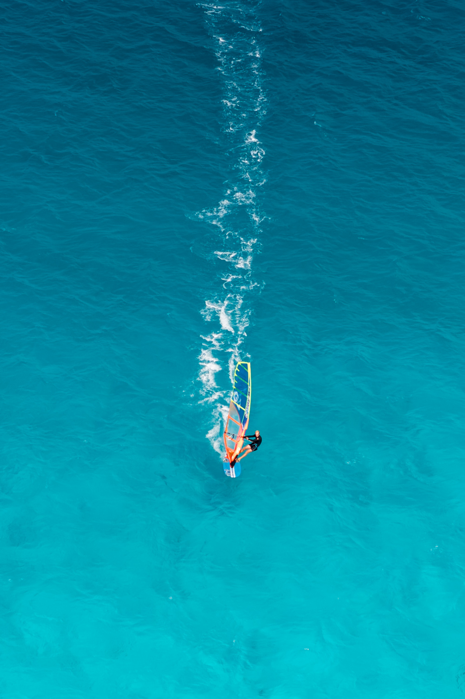
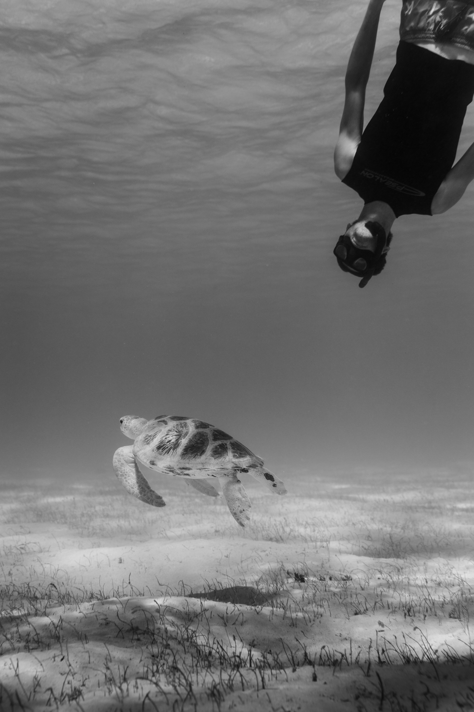
Nous quittons les Cays avec regrets et nous nous dirigeons vers Canouan. Nous sommes accueillis par un habitant qui nous donne quelques conseils pour mouiller dans la baie de Charlestown. Les rafales tombent et des tortues émergent.
Avec Clément nous partons explorer les fonds. C’est notre code pour dire que nous espérons manger de la langouste le soir. Nous allons être servis. Enfin nous allons nous démener pour être servis. Loann est resté au bateau, les deux apprentis vont devoir devenir de grands apprentis. Nous ne tardons pas à trouver une première faille remplie de langoustes. Après les avoir chatouillés pendant une petite demi-heure, elles se terrent dans le fond du trou, hors de portée. Nous décidons d’aller faire un tour avant de les embêter de nouveau. Nous longeons la côte, plongeant sous chaque caillou. Quand Clément remonte d’une plongée et que ses yeux sont aussi gros que les verres de son masque, je me doute qu’il a trouvé quelque chose. Je vais voir, je remonte et mes yeux doivent aussi tripler de surface. Une langouste comme nous en avions rarement vu. Elle bloquait le port… peut-être pas mais quand même. Nous procédons comme Loann nous a montré pour la sortir du trou. Clément ne s’en sort pas trop mal mais quand elle est dehors, nous prenons conscience de sa taille. À deux mains nous ne sommes pas sur de pouvoir faire le tour de son abdomen.
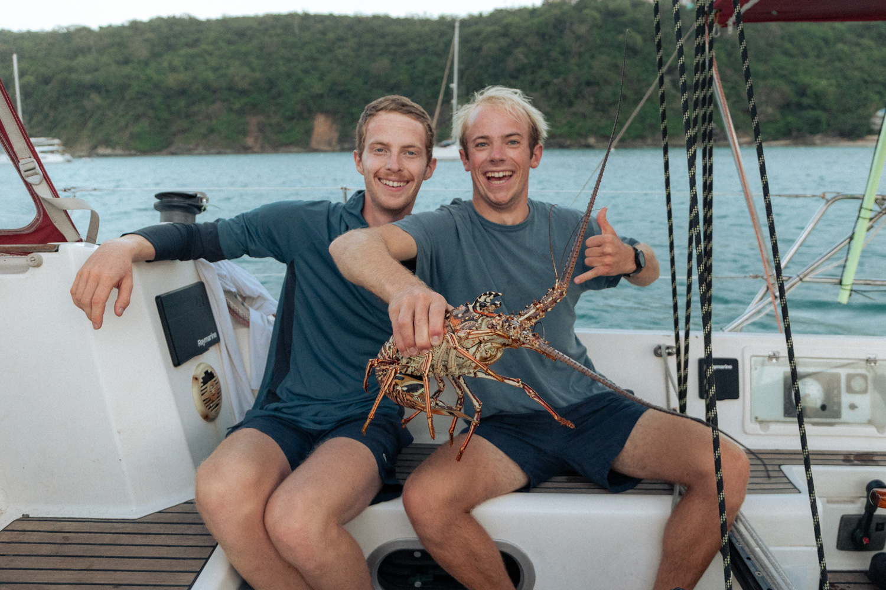
Elle a toute la place qu’elle veut pour retourner se cacher, nous restons en retrait. Nouvelles double paires d’yeux écarquillés en revenant en surface. Nous répétons l’opération cinq ou six fois avant de déployer notre méthode dite « à l’usure ». Agacée de se voir chatouillée, la langouste sort de son trou pour se poser sur le sable. Notre procédure consiste alors à pousser la langouste par devant pendant que le second tient le filet ouvert derrière elle. Cette méthode a été efficace 100% des fois qu’elle a été utilisée (nous dispensons des formations disponibles en cliquant sur l’enveloppe en bas de cette page). En effet, nous avons ramené cette langouste au bateau. Nous l’avons mangée à trois, nous aurions pu la partager avec au moins trois autres personnes.
Nous gagnons la terre le lendemain pour faire le tour de l’île. Le nord de l’île étant privatisé par un grand centre hôtelier, nous ferons le « petit tour de l’île ». Il sera cependant suffisant pour observer l’armée de véhicules de chantier qui sillonne l’île. Canouan a aussi été touché par Béryl mais les moyens de reconstructions y sont bien plus importants que sur les îles plus au sud.
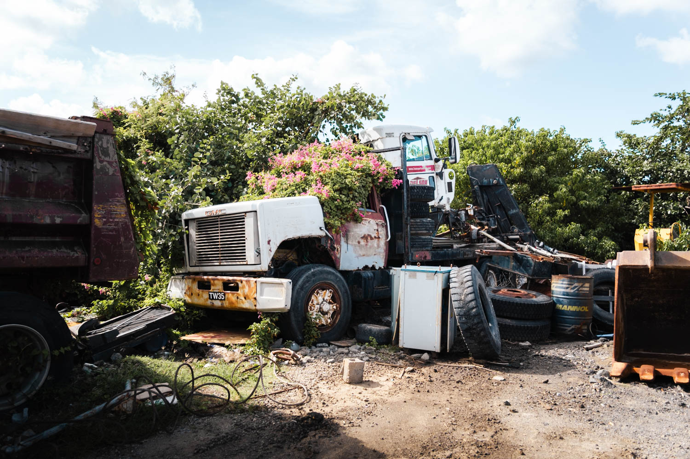
Dernière île de l’archipel des Grenadines, nous entrons dans le mouillage de Bequia (prononcer békwé) à la voile. Quelle classe ! Et quel mouillage ! Des centaines de bateaux y jettent l’ancre pour profiter de l’île la mieux ravitaillée. Nous nous mettons au premier rang pour avoir un accès plus facile à la terre. Nous trouvons des magasins bien achalandés mais toujours aussi chers. Allez, plus que quatre jours et nous sommes en France… La journée se termine au sommet de l’île depuis lequel nous observons le soleil se coucher. Nous redescendons par le sentier. Ou par le lit de torrent asséché, question de point de vue.
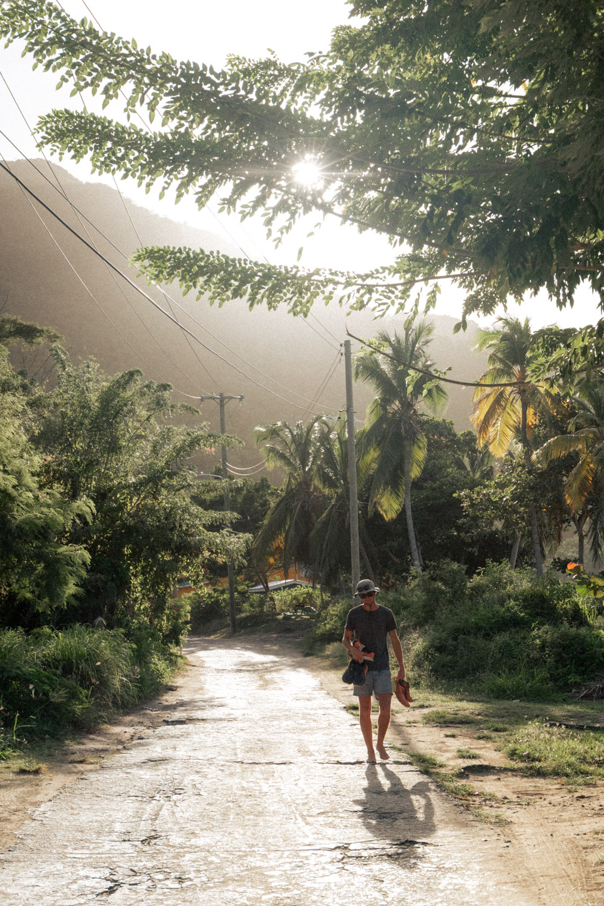
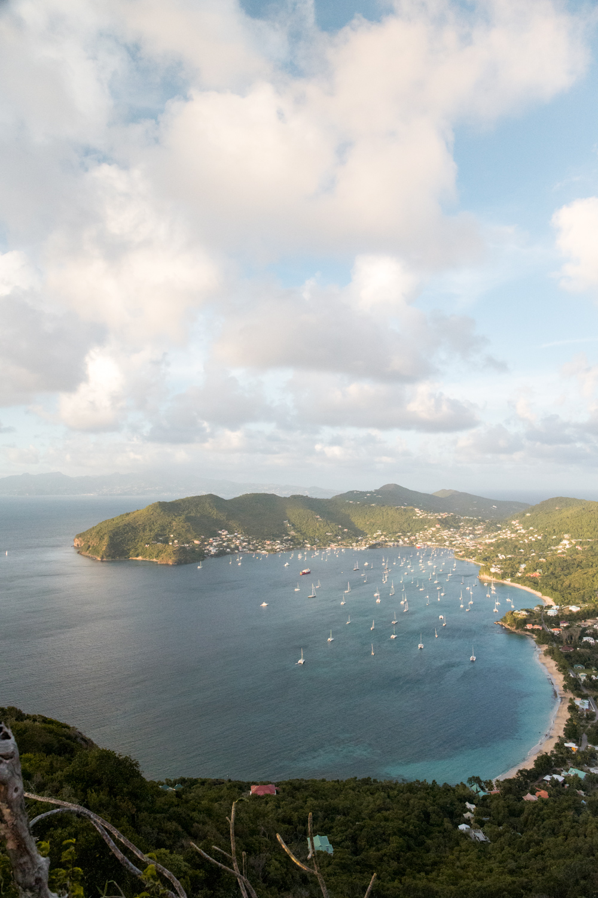
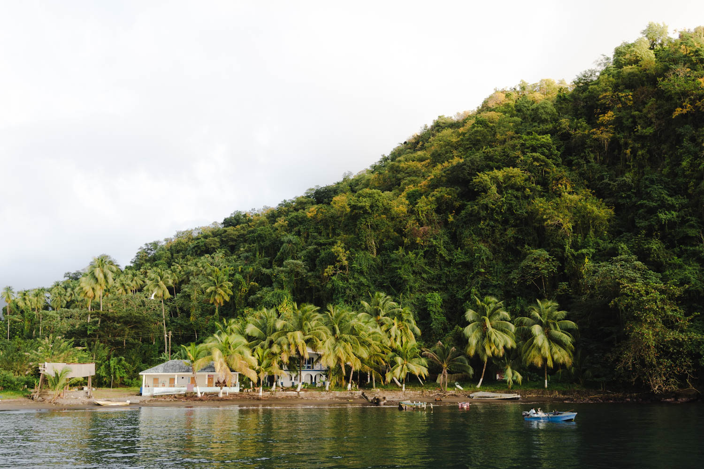
Last stop : Saint Vincent. Nous quittons Bequia en fin de matinée et filmons les derniers plans pour une vidéo des Grenadines que nous préparons. Après une navigation musclée à cause du vent et de la houle, nous atteignons Cumberland Bay. L’ambiance est magique : un événement sportif remplit la petite vallée des cris d’encouragements, des pêcheurs lancent leur filets éperviers et les palmiers encerclent la baie. Les eaux remuent alors nous tentons de pêcher depuis le bateau. Comme d’habitude, rien ne mord. Nous pêchons rarement depuis notre arrivée. La ciguatera, cette toxine qui peut engendrer des maux variés une fois ingérée en quantité suffisante, nous inquiète. Nous quittons le mouillage le lendemain, bien tristes de ne pouvoir profiter plus longtemps de cette baie si pittoresque.
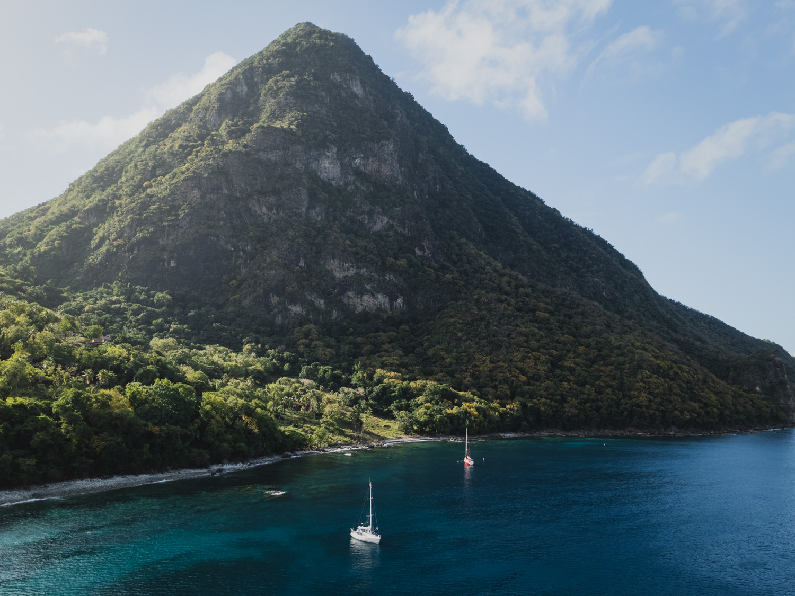
Puisque ce monde est plein de contradictions, la dernière île que nous visiterons dans cet article est enfaite Sainte Lucie. De nouveau, une navigation assez peu clémente nous permet de rejoindre un joli mouillage entre les deux pitons. Ces montagnes tombent à pique dans l’eau depuis 700m d’altitude. Nous y trouvons une faune et une flore marine extrêmement variée. Nous mouillerons une dernière fois au nord de Sainte Lucie avant de nous élancer vers la Martinique.